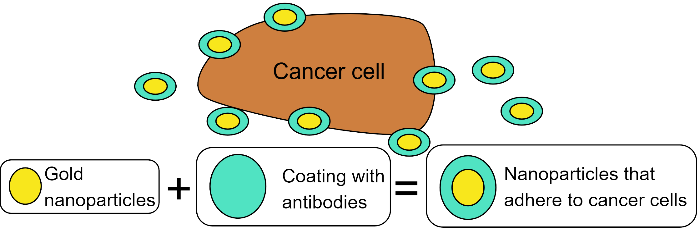

Detecting cancer sounds like a weird and difficult task, right? And it certainly is. But what if I told you
that it might be possible using gold particles smaller than a speck of dust and laser beams like the ones
in Star Wars? It may sound like science fiction, but it’s a real possibility thanks to the combination of
nanotechnology and physics.
How can something so tiny and invisible to the naked eye help us fight one of the world’s deadliest diseases?
To convince you, I’ll walk you through the process step by step— and the best part? No math required!
Gold plays a key role in this process. While detecting cancer cells can be challenging, gold is much easier
to detect—thanks to its properties as a metal (though we’ll dive into this a bit more later). Cancer cells are
extremely small, so the first step is to break down the gold into a size so tiny that it’s measured in
billionths of a meter. These minuscule gold particles are what we call gold nanoparticles[1].

There are countless ways to synthesize gold nanoparticles, and they have many applications beyond
cancer detection.[1], [2].
Once we’ve broken the gold down into tiny nanoparticles, the next step is to get them to stick to the cancer
cells somehow. To do this, some brilliant scientists came up with the wonderful idea of creating a coating
for the nanoparticles, which contains antibodies that make the coating stick to the cancer cells[3].

Illustration of the previous paragraph
After the nanoparticles have successfully attached to the cancer cells, how do we detect them? This is where
lasers and a bit of physics come into play. To understand how we detect gold nanoparticles, imagine directing
a laser at a piece of gold and a cancer cell. When the laser strikes both the gold and the cancer cell, they
heat up as they absorb some of the laser’s energy. This heating causes vibrations around them, and it’s these
vibrations that we can measure using a widely known technique called ultrasound [4]—the same method used to
monitor babies during pregnancy.
The interesting part is that gold and cancer cells are different materials, meaning they have distinct
properties. Specifically, gold, being a metal, is a better conductor of heat than cancer cells. This causes it
to absorb more energy from the laser and generate stronger vibrations than the cancer cells, allowing us
to observe these intense vibrations through ultrasound.

Fig. 3: Since gold nanoparticles generate stronger vibrations than cancer cells, this will appear as a
brighter spot in an ultrasound image.
With this, I hope I’ve convinced you that we can use gold nanoparticles to detect cancer cells. However, if
we analyze this in detail, we’re oversimplifying things into an ideal case where only gold nanoparticles and
cancer cells exist. The reality is that in real tissue, other components like skin, blood, water, fats, and
many others are also involved[5]. Moreover, there are lasers of many colors—red, blue, green—and some
emit light that our eyes can’t see, like ultraviolet and infrared. Could the color of the laser affect anything?
The answer is yes[4], and this is where physics and math start to get complicated, but also quite interesting.
But why am I telling you all this complicated stuff? Well, this is where my love for mathematics comes into play.